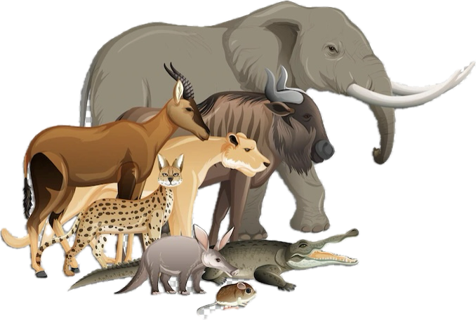

How Conservation Efforts Saved Local Endangered Species
A look at our recent success stories.
Read More
Join us in making a lasting impact on wildlife conservation.
The Texas Green Wildlife Conservatory, located near San Antonio, Texas, is a 700-acre sanctuary dedicated to the conservation of endangered species from around the world, founded by Jeffery White in 2004. From African elephants and Siberian tigers to Amazonian macaws and Australian wallabies, the conservatory provides specialized habitats that mimic native environments. It focuses on international rescue, breeding, and research programs, while offering immersive educational experiences to raise awareness about global biodiversity and environmental challenges.
A look at our recent success stories.
Read MoreLearn why wetlands are crucial to the ecosystem.
Read MoreSimple actions you can take to make a difference.
Read MoreTo get involved, complete the sign-up form below. Every volunteer application is carefully reviewed to ensure the best fit for our team and our mission to protect and preserve animals. We assess each submission based on experience, availability, and commitment to conservation efforts. Once reviewed, we will reach out with the next steps. Your dedication to wildlife makes a difference, and we truly appreciate your willingness to help. Thank you for your interest in supporting The Texas Green Wildlife Conservatory!
Your donation to Texas Green Wildlife Conservatory directly supports the rescue, care, and protection of endangered animals from across the globe. By donating, you're not just preserving wildlife, you are also helping protect the planet’s biodiversity for years to come.
Your contributions have saved countless lives.
Call or Email:
1-800-ANIMALS
texasgreenwildlifeconservatory@yahoo.com
Follow Us
@TexasGreenWC_
@The Texas Green Wildlife Conservatory